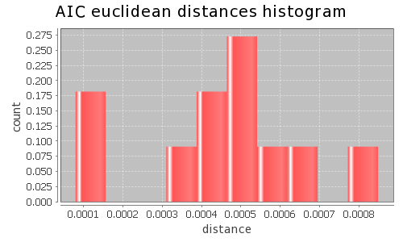
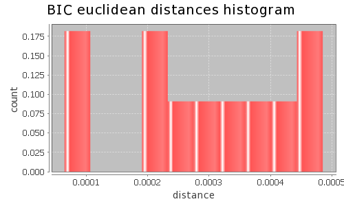

Application Meta
jModeltest 2.1
(c) 2011-onwards D. Darriba, G.L. Taboada, R. Doallo and D. Posada,(1) Department of Biochemistry, Genetics and Immunology
University of Vigo, 36310 Vigo, Spain.
(2) Department of Electronics and Systems
University of A Coruna, 15071 A Coruna, Spain.
e-mail: ddarriba@udc.es, dposada@uvigo.es
Tue May 14 19:36:21 EDT 2013
Linux 2.6.32-279.22.1.el6.x86_64, arch: amd64, bits: 64, numcores: 24
| Citation: | Darriba D, Taboada GL, Doallo R and Posada D. 2012. "jModelTest 2: more models, new heuristics and parallel computing". Nature Methods 9, 772. |
 Back to top
Back to top Settings
Arguments = -d aligned.fasta -g 4 -f -AIC -BIC -a -S BESTInput Alignment: "aligned.fasta"
NumTaxa = 5
Length = 22,928
Phyml version = 3.0
Phyml binary = PhyML_3.0_linux64
Candidate models = 12
number of substitution schemes = 3
including models with equal/unequal base frequencies (+F)
including only models without a proportion of invariable sites
including models with/without rate variation among sites (+G) (nCat = 4)
Optimized free parameters (K) = Substitution parameters + 7 branch lengths + topology
Base tree for likelihood calculations = Maximum Likelihood
Tree topology search operation = Best of {NNI, SPR}
Model Optimization Results
| ID | Name | Partition | -lnL | p | fA | fC | fG | fT | ti/tv | R(a) | R(b) | R(c) | R(d) | R(e) | R(f) | p-inv | shape |
|---|---|---|---|---|---|---|---|---|---|---|---|---|---|---|---|---|---|
| 1 | JC | 000000 | 38227.3627 | 8 | - | - | - | - | - | - | - | - | - | - | - | - | - |
| 2 | JC+G | 000000 | 38225.4952 | 9 | - | - | - | - | - | - | - | - | - | - | - | - | 1.7320 |
| 3 | F81 | 000000 | 37273.9968 | 11 | 0.3261 | 0.1578 | 0.2096 | 0.3066 | - | - | - | - | - | - | - | - | - |
| 4 | F81+G | 000000 | 37271.9937 | 12 | 0.3261 | 0.1578 | 0.2095 | 0.3066 | - | - | - | - | - | - | - | - | 1.6510 |
| 5 | K80 | 010010 | 38143.6179 | 9 | - | - | - | - | 1.1173 | - | - | - | - | - | - | - | - |
| 6 | K80+G | 010010 | 38140.8992 | 10 | - | - | - | - | 1.1303 | - | - | - | - | - | - | - | 1.3260 |
| 7 | HKY | 010010 | 37175.8743 | 12 | 0.3262 | 0.1574 | 0.2087 | 0.3077 | 1.1202 | - | - | - | - | - | - | - | - |
| 8 | HKY+G | 010010 | 37172.8482 | 13 | 0.3262 | 0.1574 | 0.2087 | 0.3077 | 1.1357 | - | - | - | - | - | - | - | 1.2300 |
| 9 | SYM | 012345 | 38140.8979 | 13 | - | - | - | - | - | 0.9819 | 2.1651 | 1.0471 | 0.7658 | 2.1564 | 1.0000 | - | - |
| 10 | SYM+G | 012345 | 38138.0518 | 14 | - | - | - | - | - | 0.9798 | 2.1896 | 1.0498 | 0.7593 | 2.1795 | 1.0000 | - | 1.2810 |
| 11 | GTR | 012345 | 37168.0506 | 16 | 0.3270 | 0.1562 | 0.2090 | 0.3077 | - | 1.1573 | 2.1084 | 0.8127 | 1.0709 | 2.6012 | 1.0000 | - | - |
| 12 | GTR+G | 012345 | 37165.0804 | 17 | 0.3271 | 0.1562 | 0.2090 | 0.3077 | - | 1.1578 | 2.1305 | 0.8086 | 1.0693 | 2.6389 | 1.0000 | - | 1.2480 |
There are 1 different topologies. The following table shows the models supporting each topology and the rank according to each Information Criterion, as well as Robinson-Foulds and Euclidean distances with the tree of the best-fit model.
| ID | Models | Topology | AIC | BIC | AICc | DT | |
|---|---|---|---|---|---|---|---|
| 0 |
JC JC+G F81 F81+G K80 K80+G HKY HKY+G SYM SYM+G GTR GTR+G
|
RANK | 0 | 0 | - | - | |
| Weight | 1.0000 | 1.0000 | - | - | |||
| RF | 0 | 0 | - | - | |||
| AVG Distance | 4.1775e-04 | 2.6643e-04 | - | - | |||
| Distance VAR | 5.5735e-08 | 2.3807e-08 | - | - |
AIC Selection Results
Model selected
| Model | GTR+G | ||
|---|---|---|---|
| partition | 012345 | ||
| -lnL | 37165.0804 | ||
| K | 17 | ||
| freqA | 0.3271 | R(a) | 1.1578 |
| freqC | 0.1562 | R(b) | 2.1305 |
| freqG | 0.2090 | R(c) | 0.8086 |
| freqT | 0.3077 | R(d) | 1.0693 |
| ti/tv | - | R(e) | 2.6389 |
| R(f) | 1.0000 | ||
| p-inv | - | gamma | 1.2480 |
Best model tree
(seq0:0.00000001,seq4:0.00000001,(seq1:0.03892783,(seq3:0.00008830,seq2:0.00000002):0.01237288):0.02427080);
Display best model tree in PhyloWidget
| Model | -lnL | K | AIC | delta | weight | cumWeight |
|---|---|---|---|---|---|---|
| GTR+G | 37165.0804 | 17 | 74364.1608 | 0.0000 | 0.8579 | 0.8579 |
| GTR | 37168.0506 | 16 | 74368.1012 | 3.9404 | 0.1196 | 0.9776 |
| HKY+G | 37172.8482 | 13 | 74371.6964 | 7.5356 | 0.0198 | 0.9974 |
| HKY | 37175.8743 | 12 | 74375.7486 | 11.5878 | 0.0026 | 1.0000 |
| F81+G | 37271.9937 | 12 | 74567.9873 | 203.8265 | 0.0000 | 1.0000 |
| F81 | 37273.9968 | 11 | 74569.9937 | 205.8329 | 0.0000 | 1.0000 |
| K80+G | 38140.8992 | 10 | 76301.7984 | 1937.6376 | 0.0000 | 1.0000 |
| SYM+G | 38138.0518 | 14 | 76304.1037 | 1939.9429 | 0.0000 | 1.0000 |
| K80 | 38143.6179 | 9 | 76305.2358 | 1941.0750 | 0.0000 | 1.0000 |
| SYM | 38140.8979 | 13 | 76307.7958 | 1943.6350 | 0.0000 | 1.0000 |
| JC+G | 38225.4952 | 9 | 76468.9905 | 2104.8297 | 0.0000 | 1.0000 |
| JC | 38227.3627 | 8 | 76470.7255 | 2106.5647 | 0.0000 | 1.0000 |
| -lnL: | negative log likelihod |
| K: | number of estimated parameters |
| AIC: | Akaike Information Criterion |
| delta: | AIC difference |
| weight: | AIC weight |
| cumWeight: | cumulative AIC weight |
Confidence interval
There are 12 models in the 100.00% confidence interval:
GTR+G GTR HKY+G HKY F81+G F81 K80+G SYM+G K80 SYM JC+G JC

Euclidean distances histogram from each model optimized tree to GTR+G tree.
Euclidean distances histogram from each model optimized tree to GTR+G tree.

Model Averaged Phylogeny
| Selection criterion | AIC |
|---|---|
| Confidence interval | 100.00% |
| Consensus type | 50% majority rule |
(seq0:0.000000,seq4:0.000000,(seq1:0.038928,(seq3:0.000088,seq2:0.000000)1.00:0.012373)1.00:0.024271);
Display consensus tree in PhyloWidget
BIC Selection Results
Model selected
| Model | HKY | ||
|---|---|---|---|
| partition | 010010 | ||
| -lnL | 37175.8743 | ||
| K | 12 | ||
| freqA | 0.3262 | R(a) | - |
| freqC | 0.1574 | R(b) | - |
| freqG | 0.2087 | R(c) | - |
| freqT | 0.3077 | R(d) | - |
| ti/tv | 1.1202 | R(e) | - |
| R(f) | - | ||
| p-inv | - | gamma | - |
Best model tree
(seq0:0.00000001,seq4:0.00000001,(seq1:0.03887632,(seq3:0.00008829,seq2:0.00000001):0.01234578):0.02379450);
Display best model tree in PhyloWidget
| Model | -lnL | K | BIC | delta | weight | cumWeight |
|---|---|---|---|---|---|---|
| HKY | 37175.8743 | 12 | 74472.2300 | 0.0000 | 0.8802 | 0.8802 |
| HKY+G | 37172.8482 | 13 | 74476.2179 | 3.9879 | 0.1198 | 1.0000 |
| GTR | 37168.0506 | 16 | 74496.7430 | 24.5130 | 0.0000 | 1.0000 |
| GTR+G | 37165.0804 | 17 | 74500.8427 | 28.6128 | 0.0000 | 1.0000 |
| F81 | 37273.9968 | 11 | 74658.4349 | 186.2049 | 0.0000 | 1.0000 |
| F81+G | 37271.9937 | 12 | 74664.4687 | 192.2387 | 0.0000 | 1.0000 |
| K80 | 38143.6179 | 9 | 76377.5968 | 1905.3668 | 0.0000 | 1.0000 |
| K80+G | 38140.8992 | 10 | 76382.1996 | 1909.9696 | 0.0000 | 1.0000 |
| SYM | 38140.8979 | 13 | 76412.3173 | 1940.0873 | 0.0000 | 1.0000 |
| SYM+G | 38138.0518 | 14 | 76416.6653 | 1944.4353 | 0.0000 | 1.0000 |
| JC | 38227.3627 | 8 | 76535.0464 | 2062.8164 | 0.0000 | 1.0000 |
| JC+G | 38225.4952 | 9 | 76541.3515 | 2069.1215 | 0.0000 | 1.0000 |
| -lnL: | negative log likelihod |
| K: | number of estimated parameters |
| BIC: | Bayesian Information Criterion |
| delta: | BIC difference |
| weight: | BIC weight |
| cumWeight: | cumulative BIC weight |
Confidence interval
There are 12 models in the 100.00% confidence interval:
HKY HKY+G GTR GTR+G F81 F81+G K80 K80+G SYM SYM+G JC JC+G

Euclidean distances histogram from each model optimized tree to HKY tree.
Euclidean distances histogram from each model optimized tree to HKY tree.

Model Averaged Phylogeny
| Selection criterion | BIC |
|---|---|
| Confidence interval | 100.00% |
| Consensus type | 50% majority rule |
(seq0:0.000000,seq4:0.000000,(seq1:0.038876,(seq3:0.000088,seq2:0.000000)1.00:0.012346)1.00:0.023794);
Display consensus tree in PhyloWidget